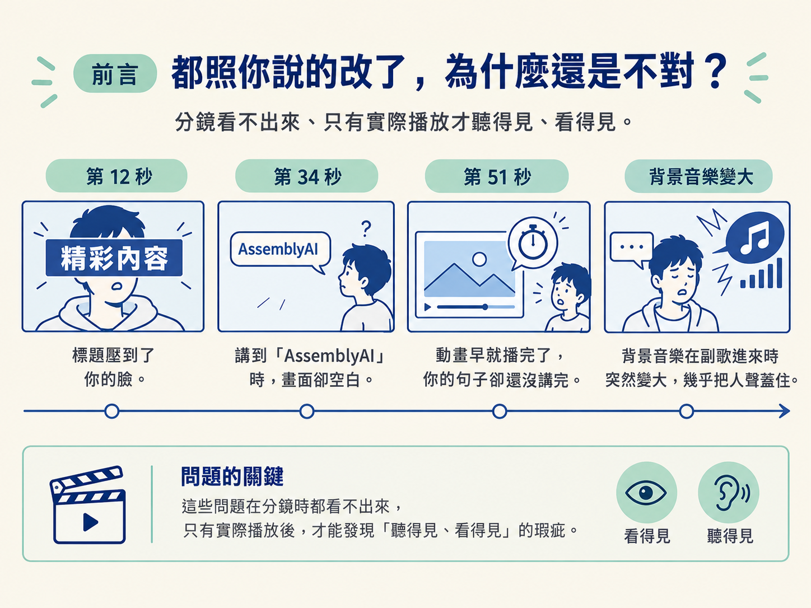
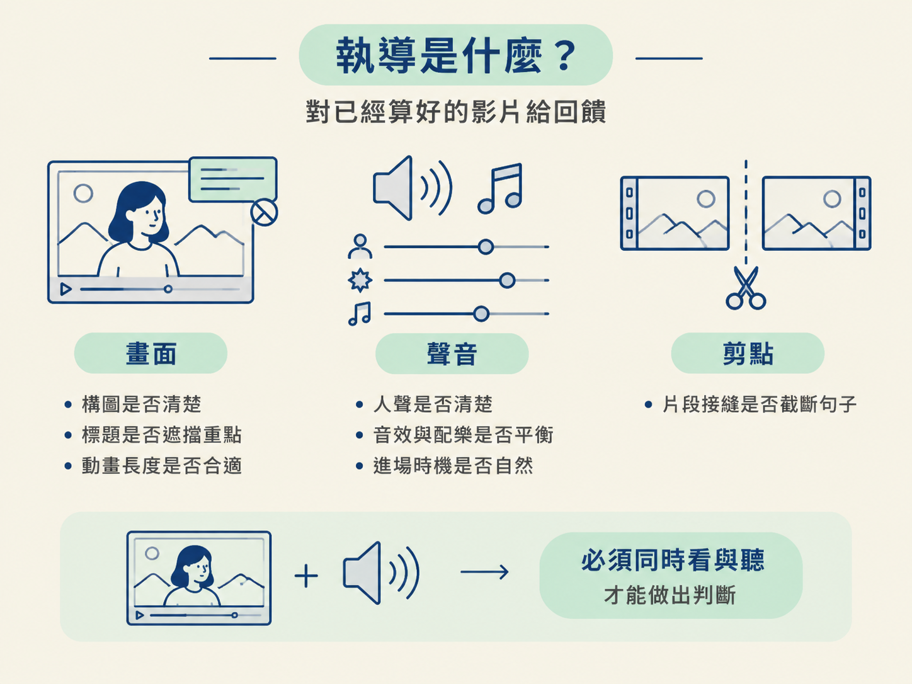
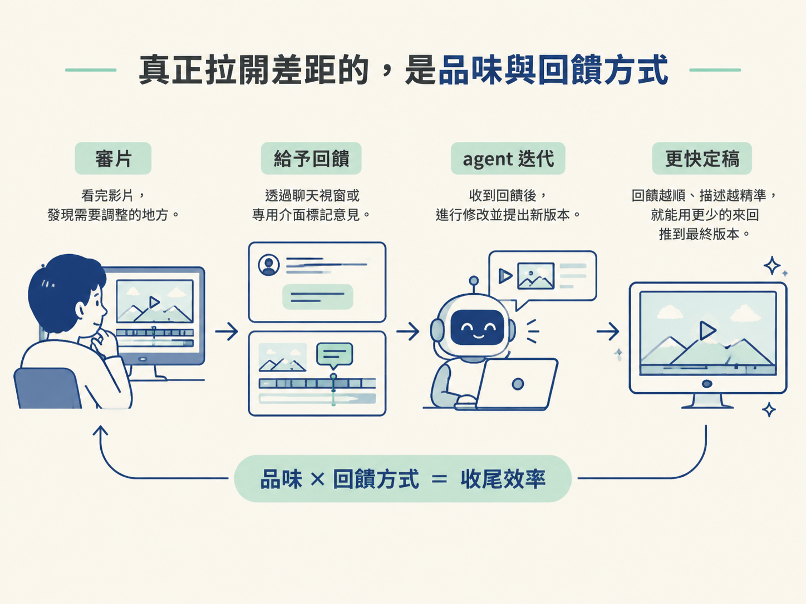

你盯著剛算完的影片，從頭到尾播了一遍。畫面很順，動畫也都出現了，分鏡上提過的每一個意見似乎都已經改好。可是看完之後，你心裡還是有點不踏實。
第 12 秒，標題壓到了你的臉；第 34 秒講到「AssemblyAI」時，畫面上卻什麼都沒有；第 51 秒，動畫早就播完了，你的句子卻還沒講完。更糟的是，背景音樂在副歌進來時突然變大，幾乎把人聲蓋住。

這些問題，在你看分鏡時一個都不容易發現。因為它們有些要等畫面「動起來」才看得見，有些則要等影片「播出聲音」才聽得見。影片做到八成之後，還需要一段專門的收尾工作，原因就在這裡。這段工作，就叫做「執導」。
學完這一課，你應該能說明：為什麼分鏡加上第一次 build 通常只完成 80–90%，以及執導究竟是在補哪一段：畫面、聲音，還是剪點。
很多人以為，只要把分鏡上的每一幕留言改好，再請 agent 把它做成影片，作品就算完成了。實際上，從分鏡直接走到第一次成品，通常只會完成大約 80 到 90%。剩下的那一小段，往往正是決定影片看起來專不專業的地方。
分鏡的作用，是先把「方向」對齊：每一幕要放什麼、文案是什麼、整體節奏大概怎麼走。但分鏡是一張張不會動的靜態畫面，它天生看不到兩件事：動作的細節，以及聲音。
只有當影片真的算出來，會動、也會響，你才有辦法判斷標題是不是停留太久、動畫是否跟得上旁白，以及音樂進場的時機是不是剛好。
「執導」聽起來像一個很玄的詞，但它做的事其實很直接：針對一支已經完成計算、可以播放的影片提出回饋。
這些回饋主要集中在三個面向。
畫面是指影片中看得見的內容，例如標題擋到臉、某個圖示應該在講到特定詞語時出現，或某段動畫持續太久。
聲音是指人聲、音效與配樂之間的關係，例如某個音效太大聲，或某段音樂太早進來。
剪點則是片段和片段之間的接縫，例如鏡頭早了半秒切換，結果把一句話硬生生截斷。
這三個面向有一個共同點：你必須同時看著影片、聽著聲音，才有辦法做出判斷。因此，執導的舞台一定是那支已經算好的影片，而不是靜態的分鏡。

想像一下電影拍攝現場。分鏡師會在開拍前畫好每一幕，但真正開拍時，導演還是得盯著螢幕，看演員怎麼走位、聽現場的聲音，然後喊出：「這裡停一下」、「音樂再大一點」。
分鏡像是一張地圖，告訴大家要往哪裡走；執導則像是人在現場開車，必須根據眼前真正發生的狀況修正方向。兩者發生在不同的時間點，也各自解決不同的問題。
把三個層級放在一起看，差別會更清楚：
| 層級 | 你回饋的對象 | 看得到什麼 | 最適合用在 |
|---|---|---|---|
| Level 1 · one-shot | 沒有，只送一句 prompt | 只有最後成品 | 測試新模型、快速做作品集 |
| Level 2 · 分鏡 | 靜態的每一幕 | 構圖、文案、節奏 | 已經知道自己要什麼，先對齊方向 |
| Level 3 · 執導 | 已算好的影片 | 畫面、聲音、剪點 | 收尾那最後 10–20% |
這張表也指出了執導和分鏡的關係：執導不是拿來取代分鏡，而是接在分鏡後面。你先用分鏡談定整體方向，再用執導補上動態與聲音裡的細節，兩段接起來，才會成為完整的影片。
現在，一句話就能生出一支 showreel，做出一支「還不錯」的影片已經不算稀奇。真正困難的是，你能不能指出第 12 秒的標題為什麼礙眼，或第 34 秒在提到某個詞時，畫面到底少了什麼。
這種分辨好壞、知道哪裡不對的能力，就是你的品味。
有了品味之後，第二個關鍵是：你要怎麼把這份判斷傳達給 agent。你可以直接在聊天視窗裡打字描述，也可以使用專門用來回饋的介面。回饋的方式越順，描述越精準，就越能用較少的來回，把影片推到定稿。

有一支真實的發表影片就是這樣完成的。它在網路上累積了超過三十萬次觀看，而整支影片從頭到尾，都是由一個人和模型反覆來回執導完成。
還有一個好消息：模型越強，你需要留下的意見就越少。以 Opus 5.5 來說，它第一次就做對的比例已經很高，很多時候只需要偶爾修正一兩個小地方。
執導的負擔因此正在變輕，但它不會消失。因為「怎樣才算好」，最後仍然只有你能決定。
分鏡加上第一次 build 通常只到 80–90%，因為分鏡看不到「動作」與「聲音」。剩下的 10–20% 要靠執導補齊，而執導就是對已經算好的影片給回饋，分成三個面向：畫面、聲音、剪點。真正拉開差距的，除了 prompt 本身，還有你自己的品味，以及你用什麼方式把回饋傳給模型。
現在你可以把執導放回整條 pipeline 中理解：分鏡負責把方向對齊，第一次 build 讓畫面真正動起來、發出聲音，而執導則負責檢查成品，補上只有播放時才看得見、聽得見的最後細節。
下一個問題是：一則好的執導留言，究竟要包含哪些內容，才能讓 agent 一次就聽懂？下一課會把好留言的結構拆開來看。